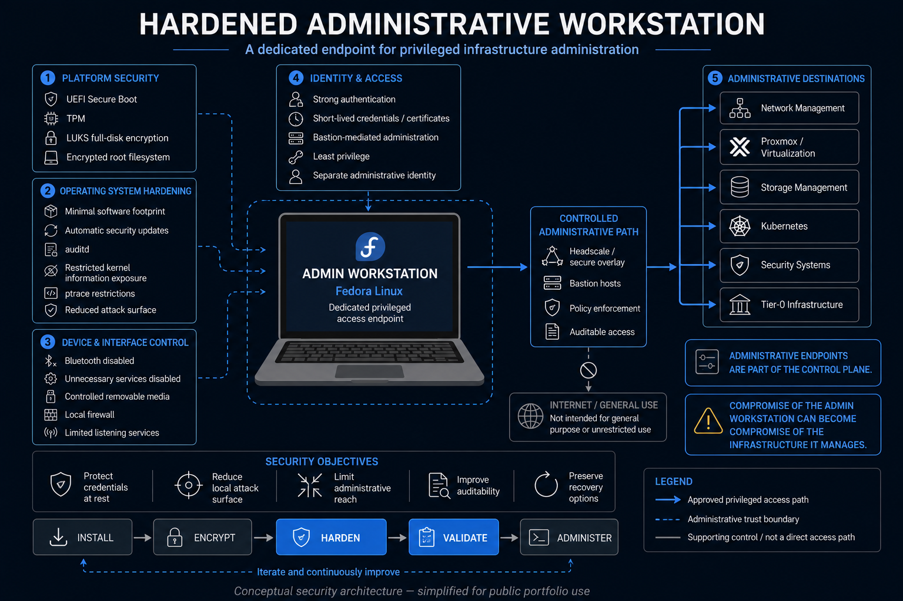
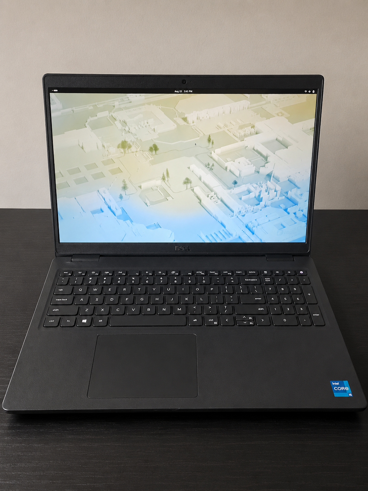

Endpoint Security
Admin Laptop Hardening
A dedicated administrative Linux workstation designed for privileged infrastructure access with encryption, verified boot, auditing, reduced attack surface, and documented security controls.
Objective
Administrative endpoints deserve stronger controls because compromising one can provide access to the systems it manages. This project builds a dedicated workstation for privileged infrastructure administration.
Security Model
The workstation is treated as part of the administrative control plane rather than as a general-purpose personal computer. Security decisions prioritize integrity, auditability, and limiting unnecessary exposure.

Physical Workstation
The project is implemented on a dedicated Dell Latitude 3520 running Fedora Linux. Keeping the administrative endpoint purpose-specific helps separate privileged infrastructure work from ordinary personal computing.

Implemented Controls
- LUKS full-disk encryption
- Secure Boot
- TPM-backed platform capabilities
- auditd logging
- Kernel hardening controls such as
ptrace_scopeandkptr_restrict - Bluetooth disabled when not required
- Reduced software and service footprint
- Documented validation of the resulting system state
Key Technologies
What This Project Demonstrates
Linux Administration
Building and maintaining a purpose-specific administrative workstation.
Endpoint Security
Applying layered controls appropriate to a privileged administrative endpoint.
Risk Analysis
Choosing controls based on the workstation's role in the broader management plane.
Validation & Documentation
Recording controls and verifying that intended protections are actually active.